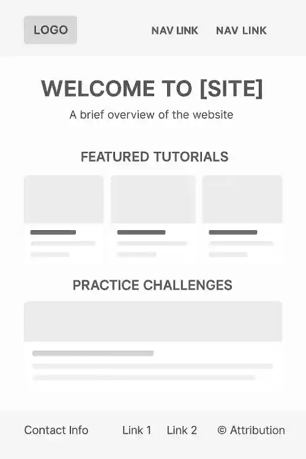

Site Name
CodeStart Tutorials — A beginner-friendly coding website designed to teach HTML, CSS, and JavaScript with simple explanations and hands-on practice.
Optional domain: codestart.org
Site Purpose
The purpose of this site is to provide clear, easy-to-follow coding tutorials and practice challenges. Users will learn how to build real webpages using HTML, style them with CSS, and add interactivity using JavaScript.
Scenarios
- “How do I create a simple webpage using HTML and CSS?”
- “Where can I practice JavaScript basics?”
- “How do I combine HTML, CSS, and JavaScript into one project?”
Color Scheme
- Primary: #2C3E50 — Headings and major UI sections.
- Accent: #D35400 — Buttons, links, highlights.
- Background: #f8f9fa — Soft light gray for readability.
Typography
- Headings: Playfair Display
- Body: Roboto
- Code: Courier New
Wireframes
Mobile Wireframe (Small Screen)
Shows a clean, single-column layout with navigation, hero image, tutorials list, weather card, and footer.

Desktop Wireframe (Large Screen)
Includes a wider layout with navigation menu, large hero section, tutorial grid, weather cards, and structured footer.
CSS Plan
The CSS will implement the site's color palette, typography, and layout. Media queries will handle transitions between mobile, tablet, and desktop views. Flexbox and CSS Grid will be used for layout organization.
Testing
Testing will include:
- HTML Validation using W3C Validator
- Accessibility testing with WAVE
- Performance testing with Lighthouse
- Color contrast testing with WebAIM Contrast Checker